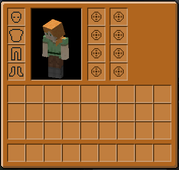
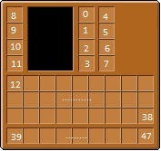
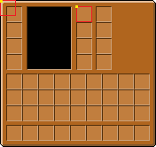
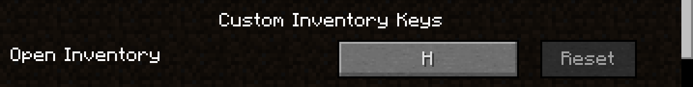

Создание своего инвентаряlink
Автор статьи — Thunder.
Рабочий тестовый мод с материалами данной статьи можно скачать здесь.
Туториал предполагает что вы знакомы с использованием прокси и умеете общаться с CAP`ой на уровне жестов(если не умеете то будем учить), а как отправлять пакеты постараюсь пояснить:)
Мы будем создавать вот такой инвентарь: 
Это будет отдельный инвентарь(т.е. он не будет перекрывать обычный), который мы сможем открыть по нажатию созданной нами в дальнейшем кнопки Н. Для повышения совместимости кнопку сделаем так, что ее можно будет поменять в настройках управления на другую, таким образом любой пользователь сможет настроить все как ему удобно.
Сам инвентарьlink
Нам нужно создать четыре "базовых" для нашего инвентаря класса:
- CustomInventory.java - класс который будет управлять содержимым инвентаря, например: хранение, сохранение и восстановление инвентаря, управление предметами и т.д..
- ContainerCustomInv,java - контейнер. В нем будут добавляться слоты и описываться механика перетаскивания предметов из слота в слот при шифт-клике на них.
- StandartSlot.java - кастомные слоты, которые будем добавлять в контейнер. Хотя можно использовать и ванильные, но заодно покажу как использовать свои.
- GUICustomInv.java - то, как будет выглядеть инвентарь(бинд текстуры и прочее).
Поехали.
// CustomInventory.java
package com.example.test;
import java.util.List;
import net.minecraft.entity.player.EntityPlayer;
import net.minecraft.inventory.IInventory;
import net.minecraft.inventory.IInventoryChangedListener;
import net.minecraft.inventory.ItemStackHelper;
import net.minecraft.item.ItemStack;
import net.minecraft.nbt.NBTTagCompound;
import net.minecraft.util.NonNullList;
import net.minecraft.util.text.ITextComponent;
import net.minecraft.util.text.TextComponentString;
import net.minecraft.util.text.TextComponentTranslation;
import net.minecraftforge.event.entity.player.PlayerEvent;
public class CustomInventory implements IInventory {
//Константа которая представляет кол-во добавленных кастомных слотов. У нас их будет 8
public static final int INV_SIZE = 8;
//Список в котором хранятся предметы. Если мы кладем предмет в слот в кастомном инвентаре, он добавляется в этот список. Размер списка должен
//быть таким же, как и кол-во кастомных слотов, т.е. 8
private NonNullList<ItemStack>inventory = NonNullList.<ItemStack>withSize(INV_SIZE, ItemStack.EMPTY);
//Конструктор
public CustomInventory() {}
/**
* Имя инвентаря. Можно потом использовать в GUI
*/
@Override
public String getName() {
return "Inventory";
}
/**
* Имеет ли инвентарь свое кастомное имя. Да, имеет.
*/
@Override
public boolean hasCustomName() {
return true;
}
@Override
public ITextComponent getDisplayName() {
return (ITextComponent)(this.hasCustomName() ? new TextComponentString(this.getName()) : new TextComponentTranslation(this.getName(), new Object[0]));
}
/**
* Возвращает размер инвентаря
*/
@Override
public int getSizeInventory() {
return inventory.size();
}
/**
* Возвращает ItemStack что лежит по указанному индексу
*/
@Override
public ItemStack getStackInSlot(int index) {
return index >= 0 && index < this.inventory.size() ? (ItemStack)this.inventory.get(index) : ItemStack.EMPTY;
}
/**
* Возвращает список с хранящимися в инвентаре предметами
* @return Список с хранящимися в инвентаре предметами
*/
public NonNullList<ItemStack> getStacks(){
return this.inventory;
}
/**
* Удаляет определенное количество элементов из слота инвентаря и возвращает их в виде нового списка.
*/
@Override
public ItemStack decrStackSize(int index, int count) {
ItemStack itemstack = ItemStackHelper.getAndSplit(this.inventory, index, count);
if (!itemstack.isEmpty()) {
this.markDirty();
}
return itemstack;
}
/**
* Удаляет стак из указанного слота и возвращает его.
*/
@Override
public ItemStack removeStackFromSlot(int index) {
if (!this.inventory.get(index).isEmpty()) {
ItemStack itemstack = this.inventory.get(index);
this.inventory.set(index, ItemStack.EMPTY);
return itemstack;
}
else {
return ItemStack.EMPTY;
}
}
/**
* Добавляет стак в указанный слот
*
*/
@Override
public void setInventorySlotContents(int index, ItemStack stack) {
this.inventory.set(index, stack);
if (!stack.isEmpty() && stack.getCount() > this.getInventoryStackLimit()) {
stack.setCount(this.getInventoryStackLimit());
}
this.markDirty();
}
/**
* Возвращает true если весь инвентарь пустой. Если не пустой - возвращает false
*/
@Override
public boolean isEmpty() {
for (ItemStack itemstack : this.inventory) {
if (!itemstack.isEmpty()) {
return false;
}
}
return true;
}
/**
* Возвращает максимальный размер стака в слоте
*/
@Override
public int getInventoryStackLimit() {
return 64;
}
/**
* Для тайл энтити. Нам он не надо
*/
@Override
public void markDirty() {
}
/**
* Может ли игрок ипользовать этот инвентарь
*/
@Override
public boolean isUsableByPlayer(EntityPlayer player) {
return true;
}
@Override
public void openInventory(EntityPlayer player) {}
@Override
public void closeInventory(EntityPlayer player) {}
/**
* Может ли автоматика класть предметы в слоты с указанным индексом
*/
@Override
public boolean isItemValidForSlot(int index, ItemStack stack) {
return true;
}
//Эти три метода ниже пока не нужны
@Override
public int getField(int id) {
return 0;
}
@Override
public void setField(int id, int value) {}
@Override
public int getFieldCount() {
return 0;
}
/**
* Очистка инвентаря
*/
@Override
public void clear() {
this.inventory.clear();
}
/**
* Этот метод будет вызываться при сохранении инфы в НБТ КАПы, чтобы, например при перезаходе предметы не пропали из инвентаря
* @param compound
*/
public void writeToNBT(NBTTagCompound compound) {
ItemStackHelper.saveAllItems(compound, this.inventory);
}
/**
* Этот метод будет вызываться при чтении инфы из НБТ КАПы. Достаем из НБТ КАПы стаки и заполняем инвентарь
* @param compound
*/
public void readFromNBT(NBTTagCompound compound) {
this.inventory = NonNullList.<ItemStack>withSize(this.getSizeInventory(), ItemStack.EMPTY);
ItemStackHelper.loadAllItems(compound, this.inventory);
}
/**
* Копируем стаки из другого инвентаря в этот. Используется в PlayerEvent.Clone Event, да бы сохранить содержимое инвентаря, например когда игрок проходит через портал в Энд
* @param inv
*/
public void copy(CustomInventory inv) {
for (int i = 0; i < inv.getSizeInventory(); ++i) {
ItemStack stack = inv.getStackInSlot(i);
inventory.set(i, (stack.isEmpty() ? ItemStack.EMPTY : stack.copy()));
}
}
}
Идем дальше.
Для того, чтоб вы не путались с индексами слотов когда будете делать или менять контейнер, я прикреплю такую картинку в помощь. На ней все слоты промаркированные: 
Теперь нужно настроить контейнер:
// ContainerCustomInv.java
package com.example.test;
import javax.annotation.Nullable;
import net.minecraft.enchantment.EnchantmentHelper;
import net.minecraft.entity.player.EntityPlayer;
import net.minecraft.entity.player.InventoryPlayer;
import net.minecraft.inventory.Container;
import net.minecraft.inventory.EntityEquipmentSlot;
import net.minecraft.entity.EntityLiving;
import net.minecraft.inventory.Slot;
import net.minecraft.item.ItemArmor;
import net.minecraft.item.ItemStack;
import net.minecraftforge.fml.relauncher.Side;
import net.minecraftforge.fml.relauncher.SideOnly;
public class ContainerCustomInv extends Container {
//Немного кода из ванилы
private static final EntityEquipmentSlot[] VALID_EQUIPMENT_SLOTS = new EntityEquipmentSlot[] {EntityEquipmentSlot.HEAD, EntityEquipmentSlot.CHEST, EntityEquipmentSlot.LEGS, EntityEquipmentSlot.FEET};
private final EntityPlayer thePlayer;
/**
* Конструктор
* @param playerInventory Инвентарь игрока
* @param cInventory Кастомный инвентарь
* @param player Игрок
*/
public ContainerCustomInv(InventoryPlayer playerInventory, CustomInventory cInventory, EntityPlayer player) {
this.thePlayer = player;
//Добавляем 8 кастомных слотов. Аргументы: игрок, инвентарь к которому они относятся, индекс слота, х координата, у координата
this.addSlotToContainer(new StandartSlot(player, cInventory, 0, 87, 8));
this.addSlotToContainer(new StandartSlot(player, cInventory, 1, 87, 26));
this.addSlotToContainer(new StandartSlot(player, cInventory, 2, 87, 44));
this.addSlotToContainer(new StandartSlot(player, cInventory, 3, 87, 62));
this.addSlotToContainer(new StandartSlot(player, cInventory, 4, 109, 8));
this.addSlotToContainer(new StandartSlot(player, cInventory, 5, 109, 26));
this.addSlotToContainer(new StandartSlot(player, cInventory, 6, 109, 44));
this.addSlotToContainer(new StandartSlot(player, cInventory, 7, 109, 62));
//Все что ниже можно взять из net.minecraft.inventory.ContainerPlayer;
//Добавляем ванильные слоты для брони
for (int k = 0; k < 4; ++k){
final EntityEquipmentSlot entityequipmentslot = VALID_EQUIPMENT_SLOTS[k];
this.addSlotToContainer(new Slot(playerInventory, 36 + (3 - k), 8, 8 + k * 18){
public int getSlotStackLimit(){
return 1;
}
public boolean isItemValid(ItemStack stack){
return stack.getItem().isValidArmor(stack, entityequipmentslot, thePlayer);
}
public boolean canTakeStack(EntityPlayer playerIn){
ItemStack itemstack = this.getStack();
return !itemstack.isEmpty() && !playerIn.isCreative() && EnchantmentHelper.hasBindingCurse(itemstack) ? false : super.canTakeStack(playerIn);
}
@Nullable
@SideOnly(Side.CLIENT)
public String getSlotTexture(){
return ItemArmor.EMPTY_SLOT_NAMES[entityequipmentslot.getIndex()];
}
});
}
//Добавляем 27 ванильных слотов инвентаря игрока
for (int l = 0; l < 3; ++l) {
for (int j1 = 0; j1 < 9; ++j1) {
this.addSlotToContainer(new Slot(playerInventory, j1 + (l + 1) * 9, 8 + j1 * 18, 84 + l * 18));
}
}
//А так же добавляем 9 ванильных слотов в хотбар
for (int i1 = 0; i1 < 9; ++i1) {
this.addSlotToContainer(new Slot(playerInventory, i1, 8 + i1 * 18, 142));
}
}
/**
* Этот метод срабатывает когда игрок зажимает Шифт и кликает на слот с целью переместить предмет.
* Здесь мы должны задать откуда и куда будут перемещаться предметы из слота по которому кликнули
* @param index Индекс слота, на который кликнул игрок
*/
@Nullable
public ItemStack transferStackInSlot(EntityPlayer playerIn, int index) {
ItemStack itemstack = ItemStack.EMPTY;
Slot slot = (Slot)this.inventorySlots.get(index);
//Если слот существует и он не пуст
if (slot != null && slot.getHasStack()){
//Достаем стак из слота
ItemStack itemstack1 = slot.getStack();
itemstack = itemstack1.copy();
//Взаимодействие
//Если индекс слота меньше 12, т.е. игрок уликнул на кастомный слот или слот брони
if (index < 12){
//Пытаемся переместить стак в ПЕРВЫЙ свободный слот в хотбаре или инвентаре, т.е. между 12 и 47 слотом
if (!this.mergeItemStack(itemstack1, 12, 48, true)) {
return ItemStack.EMPTY;
}
slot.onSlotChange(itemstack1, itemstack);
}
//Здесь наоборот. Если игрок кликнул на слот в инвентаре или хотбаре
else if (index > 11){
//Если это броня, то ее надо переместить в первый подходящий для нее слот между 8 и 11 индексом
if(itemstack1.getItem() instanceof ItemArmor){
//тут один момент. Почему передаем 12 а не 11? Потому что не включительно. Т.е. между 8 и 12 слотом не включительно
if (!this.mergeItemStack(itemstack1, 8, 12, false)){
return ItemStack.EMPTY;
}
}else
//Если это не броня и мы в инвентаре но не в хотбаре(т.е. между 12 и 38 слотом), то помещаем предмет в хотбар, т.е. между 39 и 47 слотом
if (index >= 12 && index < 39){
if (!this.mergeItemStack(itemstack1, 39, 48, false)){
return ItemStack.EMPTY;
}
}else
//Если мы в хотбаре(т.е. между 39 и 47 слотом) то пытаемся переместить предмет в инвентарь(т.е. между в ПЕРВЫМ свободным слотом в инвентаре, т.е. между 12 и 38 слотом)
if (index >= 39 && index < 48 && !this.mergeItemStack(itemstack1, 12, 39, false)){
return ItemStack.EMPTY;
}
}
//Остальные простые проверки
if (itemstack1.getCount() == 0){
slot.putStack(ItemStack.EMPTY);
}
else{
slot.onSlotChanged();
}
if (itemstack1.getCount() == itemstack.getCount()){
return ItemStack.EMPTY;
}
slot.onTake(playerIn, itemstack1);
}
return itemstack;
}
/**
* Может ли игрок взаимодействовать с инвентарем?
*/
@Override
public boolean canInteractWith(EntityPlayer playerIn) {
return true;
}
}
Если вы хотите добавить, либо убрать слот, то нужно не забыть уменьшить или увеличить размер списка, в котором хранятся предметы(CustomInventory.java -> INV_SIZE). Так же не забудьте поправить индексы в методе transferStackInSlot, что в классе ContainerCustomInv. Если этого не сделать, то пойдут краши, такие как выход за пределы массива(ArrayIndexOutOfBoundsException) и прочие.
Пару слов о том, как ориентироваться в размещении слотов. Слоты, которые мы добавляем в инвентарь стандартного размера(16 x 16). Когда добавляем слот(this.addSlotToContainer(new StandartSlot(player, cInventory, 0, x, y)), указываем x и y координаты, на которых этот слот будет размещен. В качестве центра выступает левый верхний угол слота. Думаю, понятнее будет, если посмотреть на картинку ниже:

Как видно на картинке, желтые точки это точки с координатами x и y, которые указывались при добавлении слота. Красным отмечен контур слота и как он располагается относительно указанной точки. Здесь я добавил два слота, с координатами x = 0, y = 0 и x = 87, y = 8.
Пишем дальше.
// StandartSlot.java
package com.example.test;
import javax.annotation.Nullable;
import net.minecraft.entity.player.EntityPlayer;
import net.minecraft.init.Items;
import net.minecraft.inventory.IInventory;
import net.minecraft.inventory.Slot;
import net.minecraft.item.ItemArmor;
import net.minecraft.item.ItemStack;
import net.minecraft.util.ResourceLocation;
import net.minecraftforge.fml.relauncher.Side;
import net.minecraftforge.fml.relauncher.SideOnly;
public class StandartSlot extends Slot {
//Это по сути копитя обычного ванильного слота
private final EntityPlayer thePlayer;
private int removeCount;
public StandartSlot(EntityPlayer player, IInventory inventoryIn, int slotIndex, int xPosition, int yPosition){
super(inventoryIn, slotIndex, xPosition, yPosition);
this.thePlayer = player;
}
/* Может ли даный стак быть положен в этот слот. Здесь могут быть проверки, например если вы хотите
чтоб в слот нельзя было положить яблоко, проверяете равен ли предмет в стаке яблоку, если да, то
возвращаем false
*/
public boolean isItemValid(@Nullable ItemStack stack){
//если индекс слота 0 и входящий стак - стак с яблоками, то не разрешить класть в слот.
if(this.getSlotIndex() == 0 && stack.getItem().equals(Items.APPLE)) return false;
return true;
}
public ItemStack decrStackSize(int amount){
if (this.getHasStack()){
this.removeCount += Math.min(amount, this.getStack().getCount());
}
return super.decrStackSize(amount);
}
//Что происходит, если забрать предмет из слота
public ItemStack onTake(EntityPlayer player, ItemStack stack){
this.onCrafting(stack);
super.onTake(player, stack);
return stack;
}
protected void onCrafting(ItemStack stack, int amount){
this.removeCount += amount;
this.onCrafting(stack);
}
protected void onCrafting(ItemStack stack){
stack.onCrafting(this.thePlayer.world, this.thePlayer, this.removeCount);
this.removeCount = 0;
}
}
Обратите внимание на метод в классе StandartSlot.java - public boolean isItemValid(@Nullable ItemStack stack). Этот метод позволяет нам задавать какие предметы мы хотим чтоб можно было класть в слот, а какие нет. В примере выше можно класть любые предметы. В следующем примере реализации этого метода в слот, который мы добавили с индексом 0, нельзя будет положить яблоко, а все остальное можно будет:
public boolean isItemValid(@Nullable ItemStack stack){
//если индекс слота 0 и входящий стак - стак с яблоками, то не разрешить класть в слот.
if(this.getSlotIndex() == 0 && stack.getItem().equals(Items.APPLE)) return false;
return true;
}
Отображение инвентаряlink
Осталось только GUI:
//GUICustomInv.java
package com.example.test;
import net.minecraft.client.gui.inventory.GuiContainer;
import net.minecraft.client.gui.inventory.GuiInventory;
import net.minecraft.client.renderer.GlStateManager;
import net.minecraft.entity.player.EntityPlayer;
import net.minecraft.entity.player.InventoryPlayer;
import net.minecraft.util.ResourceLocation;
public class GUICustomInv extends GuiContainer{
private float oldMouseX;
private float oldMouseY;
//Путь к текстуре - MOD_ID + :textures/gui/inventory_gui.png. У меня это src/main/resources/assets/MOD_ID/textures/gui/inventory_gui.png
private static final ResourceLocation INVENTORY_GUI_TEXTURE = new ResourceLocation(TestMod.MOD_ID + ":textures/gui/inventory_gui.png");
public GUICustomInv(EntityPlayer player, InventoryPlayer inventoryPlayer, CustomInventory cInventory) {
super(new ContainerCustomInv(inventoryPlayer, cInventory, player));
}
/**
* Рисуем все компоненты на экране
*/
public void drawScreen(int mouseX, int mouseY, float partialTicks) {
super.drawScreen(mouseX, mouseY, partialTicks);
this.oldMouseX = (float)mouseX;
this.oldMouseY = (float)mouseY;
}
/**
* Рисуем задний фон(т.е. все, что позади предметов)
*/
@Override
protected void drawGuiContainerBackgroundLayer(float partialTicks, int mouseX, int mouseY) {
//Биндим текстуру INVENTORY_GUI_TEXTURE, а так же добавляем модельку игрока как в ванильном инвентаре
GlStateManager.color(1.0F, 1.0F, 1.0F, 1.0F);
this.mc.getTextureManager().bindTexture(INVENTORY_GUI_TEXTURE);
int i = this.guiLeft;
int j = this.guiTop;
this.drawTexturedModalRect(i, j, 0, 0, this.xSize, this.ySize);
GuiInventory.drawEntityOnScreen(i + 55, j + 75, 30, (float)(i + 51) - this.oldMouseX, (float)(j + 75 - 50) - this.oldMouseY, this.mc.player);
}
}
Capabilitylink
Есть. Теперь где-то надо это все хранить. Ибо мало того, что мы просто добавим инвентарь. При первом же перезаходе игрока в мир все вещи пропадут. Для этого будем использовать такую штуку как КАПа, или Capability. Это замена IExtendedEntityProperties для новых версий.
Для этого надо:
- ICAPCustomInventory.java - интерфейс, в котором опишем основные методы для взаимодействия КАПы с инвентарем.
- CAPCustomInventory.java - класс, реализующий данный интерфейс. Так же в нем будет хранится обьект нашего инвентаря - CustomInventory.
- CAPCustomInventoryProvider.java - в нем располагаются методы для доступа к КАПе а так же проводится вызов методов чтения и сохранения (десериализации и сериализации). Вызов этих методов - это по сути вызов методов
writeNBTиreadNBTиз классаCAPCustomInventoryStorage, функционал которого описан пунктом ниже. - CAPCustomInventoryStorage.java - в этом классе есть всего два метода:
writeNBTиreadNBT. Мы должны описать в них то, что и как будет записываться и читаться в/из НБТ. Под записью и чтением в/из НБТ подразумевается сохранение нужной нам информации например при выходе игрока из игры, и ее считывание(загрузка), когда игрок заходит обратно в игру. Наши вещи будут в безопасности:)
Пишем.
// ICAPCustomInventory.java
package com.example.test;
public interface ICAPCustomInventory {
public void copyInventory(ICAPCustomInventory inventory);
public CustomInventory getInventory();
}
// CAPCustomInventory.java
package com.example.test;
public class CAPCustomInventory implements ICAPCustomInventory {
//Реализуем методы, что определены в интерфейсе ICAPCustomInventory
//Создаем обьект нашего инвентаря. Он будет храниться в этой КАП'е
public final CustomInventory inventory = new CustomInventory();
/**
* Метод, который возвращает обьект инвентаря inventory
*/
public CustomInventory getInventory(){
return this.inventory;
}
/**
* Метод, для копировании информации из другого инвентаря, например при клонировании
*/
@Override
public void copyInventory(ICAPCustomInventory inventory) {
this.inventory.copy(inventory.getInventory());
}
}
// CAPCustomInventoryProvider.java
package com.example.test;
import net.minecraft.nbt.NBTBase;
import net.minecraft.util.EnumFacing;
import net.minecraftforge.common.capabilities.Capability;
import net.minecraftforge.common.capabilities.CapabilityInject;
import net.minecraftforge.common.capabilities.ICapabilityProvider;
import net.minecraftforge.common.capabilities.ICapabilitySerializable;
public class CAPCustomInventoryProvider implements ICapabilitySerializable<NBTBase> {
//Инициализация КАПы с помощью аннотации
@CapabilityInject(ICAPCustomInventory.class)
public static final Capability<ICAPCustomInventory> INVENTORY_CAP = null;
private ICAPCustomInventory instance = INVENTORY_CAP.getDefaultInstance();
//Метод что осуществляет проверку на наличие КАПы
@Override
public boolean hasCapability(Capability<?> capability, EnumFacing facing) {
return capability == INVENTORY_CAP;
}
//Метод что осуществляет доступ к КАПе
@Override
public <T> T getCapability(Capability<T> capability, EnumFacing facing) {
return capability == INVENTORY_CAP ? INVENTORY_CAP.<T> cast(this.instance) : null;
}
//Метод инициации сохранения информации о инвентаре в НБТ
@Override
public NBTBase serializeNBT() {
return INVENTORY_CAP.getStorage().writeNBT(INVENTORY_CAP, this.instance, null);
}
//Метод инициации чтения информации о инвентаре из НБТ
@Override
public void deserializeNBT(NBTBase nbt) {
INVENTORY_CAP.getStorage().readNBT(INVENTORY_CAP, this.instance, null, nbt);
}
}
// CAPCustomInventoryStorage.java
package com.example.test;
import net.minecraft.nbt.NBTBase;
import net.minecraft.nbt.NBTTagCompound;
import net.minecraft.util.EnumFacing;
import net.minecraftforge.common.capabilities.Capability;
import net.minecraftforge.common.capabilities.Capability.IStorage;
public class CAPCustomInventoryStorage implements IStorage<ICAPCustomInventory> {
//Сохранение информации (т.е. предметов, что лежать в инвентаре) с помощью writeToNBT
@Override
public NBTBase writeNBT(Capability<ICAPCustomInventory> capability, ICAPCustomInventory instance, EnumFacing side) {
NBTTagCompound properties = new NBTTagCompound();
//Вызываем метод writeToNBT из инвентаря и записываем инфу о инвентаре с его помощью в тэг
instance.getInventory().writeToNBT(properties);
return properties;
}
//Чтение информации (т.е. предметов, что лежать в инвентаре) и добавление их в инвентарь с помощью readFromNBT
@Override
public void readNBT(Capability<ICAPCustomInventory> capability, ICAPCustomInventory instance, EnumFacing side, NBTBase nbt) {
NBTTagCompound properties = (NBTTagCompound)nbt;
//Вызываем метод readFromNBT из инвентаря и кладем в него(инв.) стаки которые хранились в тэге
instance.getInventory().readFromNBT(properties);
}
}
Готово. Нужно зарегистрировать КАПу. Пишем в коммон прокси в инит стадии:
// CommonProxy.java
CapabilityManager.INSTANCE.register(ICAPCustomInventory.class, new CAPCustomInventoryStorage(), CAPCustomInventory.class);
CapabilityEventHandler.register();
Для чего CapabilityEventHandler.register();? При создании игрока нужно ему добавить КАПу. Для этого создаем класс CapabilityEventHandler.java и добавляем в него:
// CapabilityEventHandler.java
package com.example.test;
import net.minecraft.entity.Entity;
import net.minecraft.entity.player.EntityPlayer;
import net.minecraft.entity.player.EntityPlayerMP;
import net.minecraft.item.ItemStack;
import net.minecraft.potion.Potion;
import net.minecraft.util.NonNullList;
import net.minecraft.util.ResourceLocation;
import net.minecraftforge.common.MinecraftForge;
import net.minecraftforge.event.AttachCapabilitiesEvent;
import net.minecraftforge.event.entity.EntityJoinWorldEvent;
import net.minecraftforge.event.entity.living.LivingDeathEvent;
import net.minecraftforge.event.entity.player.PlayerEvent;
import net.minecraftforge.fml.common.eventhandler.SubscribeEvent;
import net.minecraftforge.fml.common.gameevent.PlayerEvent.PlayerChangedDimensionEvent;
import net.minecraftforge.fml.common.gameevent.PlayerEvent.PlayerLoggedInEvent;
public class CapabilityEventHandler {
public static void register(){
MinecraftForge.EVENT_BUS.register(new CapabilityEventHandler());
}
public static final ResourceLocation INVENTORY_CAP = new ResourceLocation(TestMod.MOD_ID, "inventory");
//ОЧЕНЬ ВАЖНО! Добавляет капу игроку при его первом создании
@SubscribeEvent
public void attachCapability(AttachCapabilitiesEvent.Entity event) {
if (event.getEntity() instanceof EntityPlayer){
event.addCapability(INVENTORY_CAP, new CAPCustomInventoryProvider());
}
}
//Копирование инвентаря, если по каким-то причинам произошло клонирование игрока. Иначе вещи пропадут
@SubscribeEvent
public void onPlayerClone(PlayerEvent.Clone event) {
EntityPlayer player = event.getEntityPlayer();
ICAPCustomInventory newCap = player.getCapability(CAPCustomInventoryProvider.INVENTORY_CAP, null);
ICAPCustomInventory oldCap = event.getOriginal().getCapability(CAPCustomInventoryProvider.INVENTORY_CAP, null);
newCap.copyInventory(oldCap);
}
//Если игрок умрет то ничего не выпадет. Нужно выбросит вещи вручную. Выбрасываем
@SubscribeEvent
public void onPlayerDeath(LivingDeathEvent event) {
if(event.getEntity() instanceof EntityPlayer) {
//Достаем КАПу, затем инвентарь
EntityPlayer player = (EntityPlayer)event.getEntity();
ICAPCustomInventory cap = player.getCapability(CAPCustomInventoryProvider.INVENTORY_CAP, null);
CustomInventory inv = cap.getInventory();
//Выбрасываем все вещи из инвентаря
dropAllItems(player, inv);
inv.clear();
}
}
private static void dropAllItems(EntityPlayer player, CustomInventory inventory){
NonNullList<ItemStack> aitemstack = inventory.getStacks();
for (int i = 0; i < aitemstack.size(); ++i) {
if (!aitemstack.get(i).isEmpty()) {
player.dropItem(aitemstack.get(i), true, false);
}
}
}
}
Пример того, как через КАПу получить доступ к нашему инвентарю:
//Достаем КАПу, затем инвентарь
EntityPlayer player = ...;//Любым способом достать игрока
ICAPCustomInventory cap = player.getCapability(CAPCustomInventoryProvider.INVENTORY_CAP, null);
CustomInventory inv = cap.getInventory();
Клавиша на клавиатуреlink
Такс. Инвентарь есть, КАПа для хранения есть. Теперь самое интересное. Создадим свой кей бинд(т.е. забиндим кнопку), при нажатии на который будем посылать пакет на сервер с просьбой открыть наш GUI-контейнер(инвентарь). Для этого делаем класс KeyHandler.java, в котором ловим событие нажатии кнопки и отправляем пакет:
// KeyHandler.java
package com.example.test;
import org.lwjgl.input.Keyboard;
import net.minecraft.client.settings.KeyBinding;
import net.minecraftforge.common.MinecraftForge;
import net.minecraftforge.fml.client.registry.ClientRegistry;
import net.minecraftforge.fml.common.eventhandler.SubscribeEvent;
import net.minecraftforge.fml.common.gameevent.InputEvent.KeyInputEvent;
public class KeyHandler {
/* Создаем бинд. Указываем название - Open Inventory
Кнопка поумолчанию, если игрок ничего не менял будет H
Название категории - Custom Inventory Keys
*/
public static KeyBinding openKey = new KeyBinding("Open Inventory", Keyboard.KEY_H, "Custom Inventory Keys");
//Регистрируем событие и бинд
public static void register() {
MinecraftForge.EVENT_BUS.register(new KeyHandler());
ClientRegistry.registerKeyBinding(openKey);
}
//Событие, которое срабатывает при нажатии игроком кнопки на клавиатуре
@SubscribeEvent
public void onKey(KeyInputEvent event) {
//если нажали на нашу кнопку Н то отправляем пакет на сервер с просьбой открыть инвентарь
if (openKey.isPressed()) {
NetworkHandler.network.sendToServer(new OpenInventoryMessage());
}
}
}
Обязательно регаем все это дело в клиент прокси (в ините например):
KeyHandler.register();
Позже в настройках(когда доделаем все и запустим) получим что-то типа такого: 
Серверное взаимодействиеlink
В коде выше будут ошибки. Будет ругаться на NetworkHandler.network.sendToServer(new OpenInventoryMessage());. Это какраз и есть отправка пакетов. Чтобы это работало нужно:
- Создать класс NetworkHandler.java, в котором зарегистрируем наш пакет.
- Создать класс OpenInventoryMessage.java - это сам пакет а так же в нем есть вложенный класс-обработчик пакета. Он реализует метод onMessage, который срабатывает когда пакет приходит на сервер(в данном случае).
Делаем:
// OpenInventoryMessage.java
package com.example.test;
import io.netty.buffer.ByteBuf;
import net.minecraft.entity.player.EntityPlayerMP;
import net.minecraftforge.fml.common.Mod;
import net.minecraftforge.fml.common.network.simpleimpl.IMessage;
import net.minecraftforge.fml.common.network.simpleimpl.IMessageHandler;
import net.minecraftforge.fml.common.network.simpleimpl.MessageContext;
public class OpenInventoryMessage implements IMessage {
//Наша задача просто открыть GUI с серверной стороны, ничего больше передавать не нужно.
//ОБЯЗАТЕЛЬНЫЙ конструктор без параметров
public OpenInventoryMessage() { }
@Override
public void fromBytes(ByteBuf buf) {
}
@Override
public void toBytes(ByteBuf buf) {
}
//Класс-обработчик пакета. Реализует метод onMessage, который срабатывает когда пакет приходит на сервер(в данном случае)
public static class Handler implements IMessageHandler<OpenInventoryMessage, IMessage> {
//Пишем тут то, что должно произойти когда пакет дойдет до сервера
@Override
public IMessage onMessage(OpenInventoryMessage message, MessageContext ctx) {
/*В данном случае достаем игрока, который отправил пакет и открываем ГУИ.
TestMod.INSTANCE - инстанс главного класса, т.е. его обьект.
Допустим имя главного класса TestMod, а modid = "testmod", тогда в главном классе пишем: @Mod.Instance("testmod") public static TestMod INSTANCE;
GuiHandler.INVENTORY_GUI_ID - идентификатор нашего ГУИ. Я присвоил значение 0.
*/
EntityPlayerMP player = ctx.getServerHandler().playerEntity;
player.openGui(TestMod.INSTANCE, GuiHandler.INVENTORY_GUI_ID, player.getEntityWorld(), (int)player.posX, (int)player.posY, (int)player.posZ);
return null;
}
}
}
// NetworkHandler.java
package com.example.test;
import net.minecraftforge.fml.common.network.NetworkRegistry;
import net.minecraftforge.fml.common.network.simpleimpl.SimpleNetworkWrapper;
import net.minecraftforge.fml.relauncher.Side;
public class NetworkHandler {
public static SimpleNetworkWrapper network;
public static void init() {
//инициализируем класс, что занимается передачей и обработкой пакетов между клиентом и сервером. TestMod.MOD_ID - айди мода.
network = NetworkRegistry.INSTANCE.newSimpleChannel(TestMod.MOD_ID);
/* Регистрируем пакет. Параметры: класс обработчика(статический класс, который лежит внутри OpenInventoryMessage),
класс самого сообщения, идентификатор, сторона, на которой будет обрабатываться пакет.
Так как мы посылаем его на сервер, для открытия GUI менно оттуда, то указываем Side.SERVER
*/
network.registerMessage(OpenInventoryMessage.Handler.class, OpenInventoryMessage.class, 0, Side.SERVER);
}
}
Не забываем зарегать это дело. В главном классе в преините пишем:
NetworkHandler.init();
Готово. Но будут ошибки в OpenInventoryMessage -> player.openGui(...);. Нам нужен класс GuiHandler который при открытии GUI для сервера открывает контейнер, а для клиента GUI:
// GuiHandler.java
package com.example.test;
import net.minecraft.entity.player.EntityPlayer;
import net.minecraft.util.math.BlockPos;
import net.minecraft.world.World;
import net.minecraftforge.fml.common.network.IGuiHandler;
public class GuiHandler implements IGuiHandler {
public static final int INVENTORY_GUI_ID = 0;
@Override
public Object getServerGuiElement(int ID, EntityPlayer player, World world, int x, int y, int z) {
//Обьект инвентаря храниться в КАПе, значит будем брать его из нее
ICAPCustomInventory inv = player.getCapability(CAPCustomInventoryProvider.INVENTORY_CAP, null);
if(ID == INVENTORY_GUI_ID) {
return new ContainerCustomInv(player.inventory, inv.getInventory(), player);
}
return null;
}
@Override
public Object getClientGuiElement(int ID, EntityPlayer player, World world, int x, int y, int z) {
//Обьект инвентаря храниться в КАПе, значит будем брать его из нее
ICAPCustomInventory inv = player.getCapability(CAPCustomInventoryProvider.INVENTORY_CAP, null);
if(ID == INVENTORY_GUI_ID) {
return new GUICustomInv(player, player.inventory, inv.getInventory());
}
return null;
}
}
Его нужно зарегистрировать в коммон прокси в ините:
NetworkRegistry.INSTANCE.registerGuiHandler(TestMod.INSTANCE, new GuiHandler());
Воу. Почти все готово. Уже можно даже запускать.
Но есть пару важных нюансов. При смерти игрока вещи не будут выпадать. При клонировании игрока вещи пропадут. Модифицируем наш ранее созданный класс для событий CapabilityEventHandler.java чтоб он теперь выглядел вот так:
// CapabilityEventHandler.java
package com.example.test;
import net.minecraft.entity.Entity;
import net.minecraft.entity.player.EntityPlayer;
import net.minecraft.entity.player.EntityPlayerMP;
import net.minecraft.item.ItemStack;
import net.minecraft.potion.Potion;
import net.minecraft.util.NonNullList;
import net.minecraft.util.ResourceLocation;
import net.minecraftforge.common.MinecraftForge;
import net.minecraftforge.event.AttachCapabilitiesEvent;
import net.minecraftforge.event.entity.EntityJoinWorldEvent;
import net.minecraftforge.event.entity.living.LivingDeathEvent;
import net.minecraftforge.event.entity.player.PlayerEvent;
import net.minecraftforge.fml.common.eventhandler.SubscribeEvent;
import net.minecraftforge.fml.common.gameevent.PlayerEvent.PlayerChangedDimensionEvent;
import net.minecraftforge.fml.common.gameevent.PlayerEvent.PlayerLoggedInEvent;
public class CapabilityEventHandler {
public static void register(){
MinecraftForge.EVENT_BUS.register(new CapabilityEventHandler());
}
public static final ResourceLocation INVENTORY_CAP = new ResourceLocation(TestMod.MOD_ID, "inventory");
//ОЧЕНЬ ВАЖНО! Добавляет капу игроку при его первом создании
@SubscribeEvent
public void attachCapability(AttachCapabilitiesEvent.Entity event) {
if (event.getEntity() instanceof EntityPlayer){
event.addCapability(INVENTORY_CAP, new CAPCustomInventoryProvider());
}
}
//Копирование инвентаря, если по каким-то причинам произошло клонирование игрока. Иначе вещи пропадут
@SubscribeEvent
public void onPlayerClone(PlayerEvent.Clone event) {
EntityPlayer player = event.getEntityPlayer();
ICAPCustomInventory newCap = player.getCapability(CAPCustomInventoryProvider.INVENTORY_CAP, null);
ICAPCustomInventory oldCap = event.getOriginal().getCapability(CAPCustomInventoryProvider.INVENTORY_CAP, null);
newCap.copyInventory(oldCap);
}
//Если игрок умрет то ничего не выпадет. Нужно выбросит вещи вручную. Выбрасываем
@SubscribeEvent
public void onPlayerDeath(LivingDeathEvent event) {
if(event.getEntity() instanceof EntityPlayer) {
//Достаем КАПу, затем инвентарь
EntityPlayer player = (EntityPlayer)event.getEntity();
ICAPCustomInventory cap = player.getCapability(CAPCustomInventoryProvider.INVENTORY_CAP, null);
CustomInventory inv = cap.getInventory();
//Выбрасываем все вещи из инвентаря
dropAllItems(player, inv);
inv.clear();
}
}
private static void dropAllItems(EntityPlayer player, CustomInventory inventory){
NonNullList<ItemStack> aitemstack = inventory.getStacks();
for (int i = 0; i < aitemstack.size(); ++i) {
if (!aitemstack.get(i).isEmpty()) {
player.dropItem(aitemstack.get(i), true, false);
}
}
}
}
Итогlink
Еще раз проверьте:
- Зарегистрировали вы КАПу
- Зарегистрировали вы кей бинд (KeyHandler)
- Зарегистрировали ли вы обработчики событий (CapabilityEventHandler)
- Зарегистрировали вы GuiHandler
- Зарегистрировали ли вы NetworkHandler и OpenInventoryMessage
Все. Можно запускать, открывать(жмякать Н, но можно теперь поменять в настройках) и радоваться жизни.
Задний фон у слотовlink
Но есть еще кое-что. Наши кастомные слоты пустые, без текстуры, не как например слоты брони. Самый простой способ добавить текстуру слоту - это дорисовать ее на картинке:). Перерисуем нашу inventory_gui.png и добавим задний фон слотам: